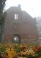

Ответ КРОУ "Виштынецкий эколого-исторический музей" на письмо от Территориального управления
В Территориальное управление федерального Агентства по управлению государственным имуществом по Калининградской области
В ответ на Ваше письмо от 30.07.2010 г. № EM-4934 с уведомлением о расторжении договора безвозмездного пользования имуществом от 02.09.2005 года №611-БП, согласно которому КРОУ «Виштынецкий эколого-исторический музей» было передано нежилое здание, являющееся объектом культурного наследия «Руины кирхи, 1873 г.», расположенное по адресу: Калининградская область, Нестеровский район, пос. Краснолесье, ул. Сосновая, отвечаем следующее.
Согласно пункту 1.1. договора безвозмездного пользования имуществом от 02.09.2005 года №611-БП и дополнительного соглашения №1-672-БП от 27.02.2007 года к договору безвозмездного пользования имуществом №611-БП от 02.09.2005 года, имущество было передано для консервации и дальнейшего восстановления, а также для размещения музейной экспозиции, работы культурно-музейного центра, проведения экскурсий, организации и проведения культурных и общественно значимых мероприятий, направленных на привлечение внимания общественности к сохранению и восстановлению здания кирхи.
Пункт 2.2. настоящего договора, а также Охранное обязательство по недвижимому памятнику истории и культуры от 08.09.2005 г. №188 обязывает «Пользователя» объекта культурного наследия содержать памятник в надлежащем санитарно-техническом состоянии, а также осуществлять текущий и капитальный ремонт.
Согласно пункту 2.2.6. настоящего договора КРОУ «Виштынецкий эколого-исторический музей» разработал и предоставил в «Территориальное управление» инвестиционную программу по восстановлению и использованию имущества, указанного в пункте 1.1. настоящего договора с указанием сроков, размера инвестиций и объёмов работ по консервации и восстановлению памятника архитектуры - «Руины кирхи, 1873 г.». Инвестиционная программа является приложением к настоящему договору.
Согласно инвестиционной программе, в которой указаны предполагаемые сроки запланировано следующее:
2006-2009 гг. - консервация здания (противоаварийные работы элементов кирпичных стен, очистка подвалов и т.д.),
2007-2010 гг. - подготовка проекта восстановительных работ (подготовка проектной документации, смет и т.п.),
2009-2020 гг. - восстановительные работы (восстановление стен, кровли, работы по внутренней отделке и т.п.),
общественным учреждением за четыре с половиной года к лету 2010 года было выполнено на привлечённые и собственные средства следующее:
- при заключении договора был изготовлен технический паспорт нежилого здания «Руины кирхи, 1873 г.»;
- совместно с органами внутренних дел предотвращены факты хищения кирпича на памятнике;
- произведена очистка внутреннего пространства руин кирхи и прилегающей территории от древесной растительности (чистка производится периодически каждый год);
- произведена очистка внутреннего пространства от многолетних накоплений мусора;
- предотвращен бесконтрольный доступ внутрь здания: закрыт основной вход и окна первого этажа решётчатыми деревянными конструкциями, позволяющими обозревать внутреннее пространство руин;
- в 2006 году произведена вырезка древесно-кустарниковой растительности на стенах здания;
- в 2007 году была расчищен от земли главный вход в рамках международного лагеря волонтёров, а также выполнены схемы фасадов и отдельных архитектурных деталей;
- производится ежегодный окос травы на прилегающей территории и внутри руин;
- ведётся постоянное наблюдение за сохранностью руин кирхи сотрудниками общественного учреждения, проживающими в пос. Краснолесье.
- в 2010 года велась подготовка международного проекта по реставрации памятника архитектуры «Руины кирхи, 1873 г.» совместно со старейшей польской организацией Краеведения и туризма города Сувалки. Согласно проекту с 2010 года должны были начаться работы по разработке проектно-сметной документации.
Разработка данного проекта и участие в нём прерваны ввиду неопределённости в праве пользования руинированным зданием кирхи, возникшей по факту передачи объекта в пользование Русской Православной Церкви, о чём случайно было сообщено сотрудникам учреждения её представителями. Этот факт подвиг сотрудников КРОУ «Виштынецкий эколого-исторический музей» обратиться в Территориальное управление федерального Агентства по управлению государственным имуществом по Калининградской области за разъяснениями правового статуса общественного учреждения в пользовании объектом «Руины кирхи, 1873 г.», на что и было получено письмо о расторжении договора безвозмездного пользования имуществом от 02.09.2005 года №611-БП.
Основания для расторжения договора указаны в Акте проверки порядка использования и сохранности федерального имущества от 16 июля 2010 года. Данная проверка была проведена после обращения представителя общественного учреждения в Территориальное управление. В Акте указано: «На момент проверки установлено отсутствие ремонтно-реставрационных работ на объекте, музейной экспозиции об истории кирхи, природе и истории Виштынецкой возвышенности, не организован культурно-музейный центр учреждения: офис, библиотека, лаборатория, фонды музея».
В связи с этим КРОУ «Виштынецкий эколого-исторический музей» выражает протест, так как данная причина не может являться основанием для расторжения договора, согласно которому учреждение добросовестно выполняло инвестиционную программу, прилагаемую к нему, о чём подробно указано выше.
Указанная в инвестиционной программе очистка подвалов не проводилась ввиду их установленного отсутствия. Культурная деятельность в виде проведения экскурсий для школьников Калининградской области по руинам кирхи, включённым в маршрут следования, велась постоянно. В мае 2010 года в кирхе состоялось культурно-массовое мероприятие «Музейная ночь», на котором присутствовало около 120 человек, как местных жителей, так и гостей из Калининграда и области. О мероприятии можно узнать на сайте учреждения www.wystynez.ru, где также опубликована информация об истории памятника и обращение о помощи в его восстановлении.
Вне здравого смысла полагать, что за четыре года в руинах кирхи до момента её восстановления возникнет культурно-музейный центр с офисом, библиотекой, лабораторией и хранилищем для фондов музея. Не говоря о том, что это противоречит срокам инвестиционной программы к договору, заключённому между Территориальным управлением федерального Агентства по управлению государственным имуществом по Калининградской области и КРОУ «Виштынецкий эколого-исторический музей».
Учитывая всё вышеуказанное, считаем, что основания, указанные в упомянутом Акте проверки от 16.07.2010г. ничтожны и не могут являться причиной для расторжения договора.
В выводах и предложениях Акта проверки указано, что «руководствуясь Поручением Правительства Российской Федерации от 02.04.2009 г. № СС-П44-1802, Федеральным законом от 25.06.2002 г. № 73-ФЗ «Об объектах культурного наследия (памятниках истории и культуры) народов Российской Федерации», Территориальному управлению Росимущества по Калининградской области передать данный объект религиозного назначения в безвозмездное пользование Русской Православной Церкви».
В связи с этим возникает мнение, что, вероятно, это и есть истинная причина цели расторжения договора, что объясняет несостоятельность выдвинутых оснований для его расторжения. Если это так, то уместно обратиться в КРОУ «Виштынецкий музей» с предложением переговорово планах передачи объекта религиозной организации.
С уважением
директор КРОУ
«Виштынецкий эколого-исторический музей» А.А. Соколов